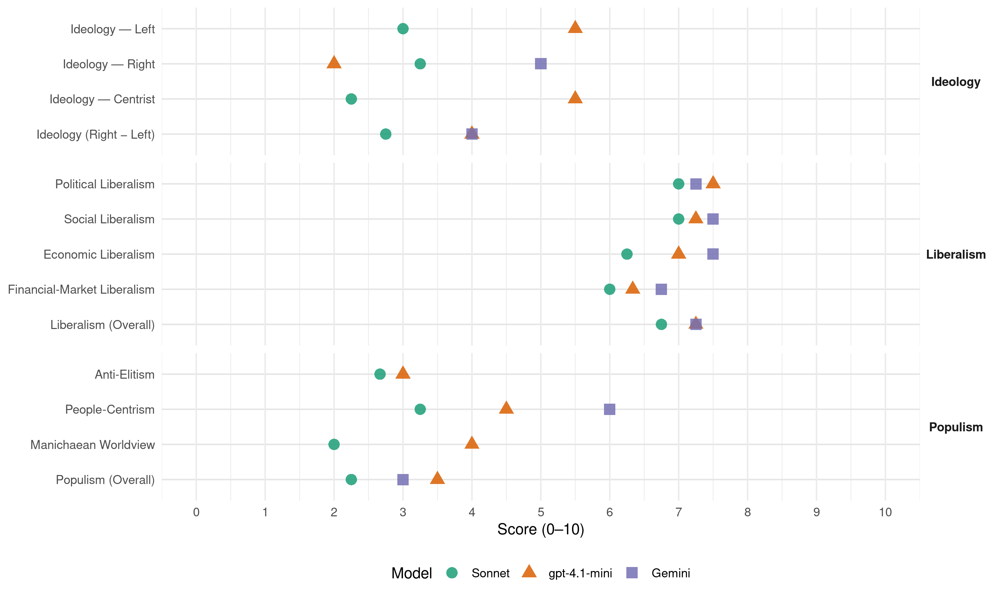

CiU (Spain, 2011)
manifesto_id 33611_201111
Get full text: This site shows derived annotations and short verbatim quotes only. The full manifesto text is © Manifesto Project / WZB — obtain it via manifesto-project.wzb.eu using the manifesto_id above.
Headline scores
| Dimension | Sonnet | gpt-4.1-mini | Gemini |
|---|---|---|---|
| Populism (Overall) | 2.2 | 3.5 | 3.0 |
| Anti-Elitism | 2.7 | 3.0 | – |
| People-Centrism | 3.2 | 4.5 | 6.0 |
| Manichaean Worldview | 2.0 | 4.0 | – |
| Ideology (Right − Left) | 2.8 | 4.0 | 4.0 |
| Liberalism (Overall) | 6.8 | 7.2 | 7.2 |
| Political Liberalism | 7.0 | 7.5 | 7.2 |
| Social Liberalism | 7.0 | 7.2 | 7.5 |
| Economic Liberalism | 6.2 | 7.0 | 7.5 |
| Financial-Market Liberalism | 6.0 | 6.3 | 6.8 |
Evidence per dimension
Economic Liberalism
Gemini · score 8.0 · verified · chunk 1
“liberalització de l’economia, especialment en els sectors”
L’aprofundiment en la liberalització de l’economia, especialment en els sectors de les telecomunicacions
Gemini · score 7.0 · verified · chunk 2
“afavorir l’adaptabilitat de les empreses a les”
en l’organització de la jornada, afavorir l’adaptabilitat de les empreses a les variacions del procés
Gemini · score 7.0 · verified · chunk 3
“afavorirem els projectes emprenedors de les dones”
de treball − Impulsarem noves mesures financeres per tal d’afavorir els projectes emprenedors de les dones per la via de programes específics d’avals
Gemini · score 8.0 · verified · chunk 4
“sistema econòmic d’economia social de mercat”
Revalidem el nostre compromís amb l’estat social, democràtic de dret i pluralista, amb tots i cadascun del seus elements com és el sistema econòmic d’economia social de mercat;
gpt-4.1-mini · score 8.0 · verified · chunk 1
“reactivar l’economia productiva i crear ocupació”
Reactiva l’economia productiva i crear ocupació. Obrir un nou futur econòmic per Catalunya. És l’hora d’obrir un nou futur econòmic per Catalunya.
gpt-4.1-mini · score 7.0 · verified · chunk 2
“Impulsarem un Pla de Xoc per a l’Ocupació amb nous incentius per a la generació d’ocupació”
Impulsarem un Pla de Xoc per a l’Ocupació amb nous incentius per a la generació d’ocupació a curt termini. El Pla haurà de venir acompanyat de mesures financeres, a través de l’ICO, i fiscals destinades a finançar la posada en funcionament de projectes empresarials potencialment viables i creadors d’ocupació.
gpt-4.1-mini · score 7.0 · verified · chunk 3
“Impulsarem la reforma de la Llei 49/2002, de 23 de desembre, de règim fiscal de les entitats sense fins lucratius i dels incentius fiscals al Mecenatge”
Promourem una reforma de la Llei 49/2002, de 23 de desembre, de règim fiscal de les entitats sense fins lucratius i dels incentius fiscals al Mecenatge que entre d’altres, millori el tractament fiscal de les donacions a entitats sense afany de lucre i declari activitat prioritària de mecenatge les activitats realitzades per fundacions o altres entitats sense ànim de lucre, que tinguin com a objectiu social prioritari lluitar contra l’exclusió social o lliurar habitatge social a determinats col·lectius.
gpt-4.1-mini · score 6.0 · verified · chunk 4
“Fomentarem una llei que tingui com a objectiu fomentar la responsabilitat social”
…Fomentarem un marc legal que promogui la responsabilitat social de l’empresa, tant per a les empreses multinacionals que operen en països empobrits, com per a les petites i mitjanes empreses del país, fonamentals en la creació d’ocupació. Promourem una llei que tingui com a objectiu fomentar la responsabilitat social, tal com s’ha fet a Dinamarca…
Sonnet · score 7.0 · verified · chunk 1
“liberalització de l’economia, especialment en els sectors”
L’aprofundiment en la liberalització de l’economia, especialment en els sectors de les telecomunicacions, l’energia, el transport i la prestació de serveis
Sonnet · score 6.0 · verified · chunk 2
“mercat de treball més flexible i més segur”
Avançar cap a la ‘Flexiseguretat’: un mercat de treball més flexible i més segur. Cal endegar reformes en el mercat de treball per aconseguir major estabilitat laboral, millor formació
Sonnet · score 6.0 · verified · chunk 3
“Afavorirem la competència i agilitzarem els canvis normatius”
Afavorirem la competència i agilitzarem els canvis normatius necessaris per garantir l’abaratiment dels serveis de telecomunicacions, especialment de la banda ampla.
Sonnet · score 6.0 · verified · chunk 4
“sistema econòmic d’economia social de mercat”
Revalidem el nostre compromís amb l’estat social, democràtic de dret i pluralista, amb tots i cadascun del seus elements com és el sistema econòmic d’economia social de mercat
Financial-Market Liberalism
Gemini · score 7.0 · verified · chunk 1
“garantir la solvència de les entitats financeres”
òrgans reguladors per garantir la solvència de les entitats financeres i el funcionament eficient
Gemini · score 6.0 · verified · chunk 2
“pràctiques de concessió responsable de préstecs o”
Vetllar per les pràctiques de concessió responsable de préstecs o crèdits que afavoreixin la contractació
Gemini · score 7.0 · verified · chunk 3
“potenciar el Mercat Alternatiu Borsari com a instrument”
empresaris. − Cal potenciar el Mercat Alternatiu Borsari com a instrument d’inversió i de creixement de les empreses
Gemini · score 7.0 · verified · chunk 4
“companyies que cotitzen en els mercats organitzats”
que entre d’altres, estableixi per a les grans companyies que cotitzen en els mercats organitzats, l’obligatorietat de l’informe
gpt-4.1-mini · score 7.0 · verified · chunk 1
“transparència del sistema financer i pel rigor de l’actuació dels òrgans reguladors”
CiU vetllarà per la transparència del sistema financer i pel rigor de l’actuació dels òrgans reguladors per garantir la solvència de les entitats financeres i el funcionament eficient del propi sistema.
gpt-4.1-mini · score 7.0 · verified · chunk 2
“Vetllarem per un compliment escrupolós de la Llei de Morositat per part de les Administracions públiques”
Vetllarem per un compliment escrupolós de la Llei de Morositat per part de les Administracions públiques i l’establiment d’un sistema sancionador en cas d’incompliment.
gpt-4.1-mini · score 5.0 · verified · chunk 4
“Impulsarem la modificació de les lleis estatals corresponents per tal de permetre a la Generalitat”
…Promourem la modificació de les lleis estatals corresponents per tal de permetre a la Generalitat designar o participar en els processos de designació dels membres dels òrgans de direcció del Banc d’Espanya, de la Comissió Nacional del Mercat de Valors, de la Comissió del Mercat de Telecomunicacions i d’aquells altres organismes estatals que exerceixin funcions d’autoritat reguladora sobre matèries de rellevància econòmica i social relacionades amb les competències de la Generalitat….
Sonnet · score 7.0 · verified · chunk 1
“transparència del sistema financer”
CiU vetllarà per la transparència del sistema financer i pel rigor de l’actuació dels òrgans reguladors per garantir la solvència de les entitats financeres
Sonnet · score 6.0 · verified · chunk 2
“Limitar els interessos de mora que apliquen les entitats financeres”
CIU treballarà en la promulgació d’una llei de crèdit responsable. Limitar els interessos de mora que apliquen les entitats financeres. Vetllar per la independència de les societats de taxació.
Sonnet · score 6.0 · verified · chunk 3
“Mercat Alternatiu Borsari com a instrument d’inversió”
Cal potenciar el Mercat Alternatiu Borsari com a instrument d’inversió i de creixement de les empreses (Pimes).
Sonnet · score 5.0 · verified · chunk 4
“les grans companyies que cotitzen en els mercats organitzats”
Promourem una llei que tingui com a objectiu fomentar la responsabilitat social, tal com s’ha fet a Dinamarca, que entre d’altres, estableixi per a les grans companyies que cotitzen en els mercats organitzats, l’obligatorietat de l’informe sobre aspectes ambientals, socials i de bon govern
Political Liberalism
Gemini · score 7.0 · verified · chunk 1
“consolidació de la jove democràcia”
aprovació de la Constitució i en la consolidació de la jove democràcia en va ser un primer exemple.
Gemini · score 7.0 · verified · chunk 2
“processos electorals, per incloure en el mateix”
en la vida política i en els processos electorals, per incloure en el mateix els recursos de suport
Gemini · score 7.0 · verified · chunk 3
“retallada de les llibertats dels usuaris”
no pot suposar una retallada de les llibertats dels usuaris ni pot respondre a interessos partidaris.
Gemini · score 8.0 · verified · chunk 4
“estat social, democràtic de dret”
Revalidem el nostre compromís amb l’estat social, democràtic de dret i pluralista, amb tots i cadascun del seus elements
gpt-4.1-mini · score 7.0 · verified · chunk 1
“la consolidació de la jove democràcia”
La nostra implicació en la formulació i l’aprovació de la Constitució i en la consolidació de la jove democràcia en va ser un primer exemple.
gpt-4.1-mini · score 8.0 · verified · chunk 2
“Garantirem que la Generalitat pugui exercir les seves competències exclusives en matèria de cultura”
Garantirem que la Generalitat pugui exercir les seves competències exclusives en matèria de cultura, plenament i sense interferències de l’Estat, reclamant també el traspàs d’infraestructures i competències pendents, d’acord amb l’Estatut.
gpt-4.1-mini · score 7.0 · verified · chunk 3
“la llibertat d’elecció de centre, d’acord amb el seu ideari i projecte educatiu”
Garantirem el dret a l’educació i a la llibertat d’elecció de centre, d’acord amb el seu ideari i projecte educatiu. − Defensarem, amb el Pacte Fiscal, un finançament que ens permeti avançar cap a l’objectiu de destinar el 6 % del PIB a despesa educativa.
gpt-4.1-mini · score 8.0 · verified · chunk 4
“Revalidem el nostre compromís amb l’estat social, democràtic de dret i pluralista”
5.1 Regeneració democràtica. Revalidem el nostre compromís amb l’estat social, democràtic de dret i pluralista, amb tots i cadascun del seus elements com és el sistema econòmic d’economia social de mercat; la societat del benestar com a model social garant de la cohesió; i amb la democràcia pluralista, parlamentària i representativa com a model polític. No hi ha dubte que la crisi econòmica i els seus efectes socials estan posant a prova el sistema polític….
Sonnet · score 7.0 · verified · chunk 1
“mesures de qualitat democràtica”
Respondre als reptes de futur. − Plantejar mesures de qualitat democràtica. − La voluntat de CiU de tenir un paper molt actiu
Sonnet · score 7.0 · verified · chunk 2
“la Generalitat pugui exercir les seves competències exclusives”
Garantirem que la Generalitat pugui exercir les seves competències exclusives en matèria de cultura, plenament i sense interferències de l’Estat, reclamant també el traspàs d’infraestructures i competències pendents
Sonnet · score 7.0 · verified · chunk 3
“Transparència, Participació, Col·laboració i Rendiment de comptes”
Reclamarem la Nova Governança de l’Administració General de l’Estat (Open Government i e-Democracy) a partir de l’aprofitament de les TIC i fent una aposta clara pels principis següents: Transparència, Participació, Col·laboració i Rendiment de comptes.
Sonnet · score 7.0 · verified · chunk 4
“la divisió de poders, l’imperi de la llei”
A través de l’aprofundiment i millora dels seus elements constitutius: la divisió de poders, l’imperi de la llei com a expressió de la voluntat popular, del reconeixement i respecte dels drets i deures fonamentals
Liberalism (Overall)
Gemini · score 7.0 · verified · chunk 1
“liberalització de l’economia, especialment en els sectors”
L’aprofundiment en la liberalització de l’economia, especialment en els sectors de les telecomunicacions
Gemini · score 7.0 · verified · chunk 2
“evitar qualsevol tipus de discriminació per raó”
aprovació d’una Llei per evitar qualsevol tipus de discriminació per raó de edat i una modificació
Gemini · score 7.0 · verified · chunk 3
“potenciar el Mercat Alternatiu Borsari com a instrument”
empresaris. − Cal potenciar el Mercat Alternatiu Borsari com a instrument d’inversió i de creixement de les empreses
Gemini · score 8.0 · verified · chunk 4
“estat social, democràtic de dret”
Revalidem el nostre compromís amb l’estat social, democràtic de dret i pluralista, amb tots i cadascun del seus elements
gpt-4.1-mini · score 7.0 · verified · chunk 1
“reactivar l’economia productiva i crear ocupació”
Reactiva l’economia productiva i crear ocupació. Obrir un nou futur econòmic per Catalunya. És l’hora d’obrir un nou futur econòmic per Catalunya.
gpt-4.1-mini · score 8.0 · verified · chunk 2
“Garantirem que la Generalitat pugui exercir les seves competències exclusives en matèria de cultura”
Garantirem que la Generalitat pugui exercir les seves competències exclusives en matèria de cultura, plenament i sense interferències de l’Estat, reclamant també el traspàs d’infraestructures i competències pendents, d’acord amb l’Estatut.
gpt-4.1-mini · score 7.0 · verified · chunk 3
“la igualtat dona-home a totes les manifestacions de caràcter cultural”
Defensarem el respecte a la dona i la igualtat dona-home a totes les manifestacions de caràcter cultural. − Establirem incentius encaminats a impulsar que els homes sol·licitin els diferents permisos que la llei els reconeix.
gpt-4.1-mini · score 7.0 · verified · chunk 4
“Revalidem el nostre compromís amb l’estat social, democràtic de dret i pluralista”
5.1 Regeneració democràtica. Revalidem el nostre compromís amb l’estat social, democràtic de dret i pluralista, amb tots i cadascun del seus elements com és el sistema econòmic d’economia social de mercat; la societat del benestar com a model social garant de la cohesió; i amb la democràcia pluralista, parlamentària i representativa com a model polític. No hi ha dubte que la crisi econòmica i els seus efectes socials estan posant a prova el sistema polític….
Sonnet · score 7.0 · verified · chunk 1
“liberalització de l’economia, especialment en els sectors”
L’aprofundiment en la liberalització de l’economia, especialment en els sectors de les telecomunicacions, l’energia, el transport i la prestació de serveis
Sonnet · score 7.0 · verified · chunk 2
“mercat de treball més flexible i més segur”
Avançar cap a la ‘Flexiseguretat’: un mercat de treball més flexible i més segur. Cal endegar reformes en el mercat de treball per aconseguir major estabilitat laboral
Sonnet · score 7.0 · verified · chunk 3
“Transparència, Participació, Col·laboració i Rendiment de comptes”
Reclamarem la Nova Governança de l’Administració General de l’Estat (Open Government i e-Democracy) a partir de l’aprofitament de les TIC i fent una aposta clara pels principis següents: Transparència, Participació, Col·laboració i Rendiment de comptes.
Sonnet · score 6.0 · verified · chunk 4
“democràcia pluralista, parlamentària i representativa com a model polític”
Revalidem el nostre compromís amb l’estat social, democràtic de dret i pluralista, amb tots i cadascun del seus elements com és el sistema econòmic d’economia social de mercat; la societat del benestar com a model social garant de la cohesió; i amb la democràcia pluralista, parlamentària i representativa com a model polític
Anti-Elitism
gpt-4.1-mini · score 3.0 · verified · chunk 1
“desprestigi de la política i de les institucions”
la profunda crisi econòmica que afecta la nostra societat. Com que aquesta afecció també es posa de relleu en el desprestigi de la política i de les institucions, cal igualment actuar de forma decidida per recuperar la confiança dels ciutadans.
gpt-4.1-mini · score 3.0 · verified · chunk 4
“Lluitarem contra la corrupció, una de les principals amenaces que afecten la política”
…que cerquin respostes i contribueixin en la construcció d’una societat més lliure i justa. − Lluitarem contra la corrupció, una de les principals amenaces que afecten la política. Impulsarem i donarem suport a les accions amb voluntat de transparència i de rigor en la persecució de les accions il·lícites. − Cal fer l’esforç permanent de proximitat amb els ciutadans per tal d’explicar l’ús que es fa dels seus vots….
Sonnet · score 3.0 · verified · chunk 1
“no ha estat ni valorat ni correspost”
un indubtable prestigi, que, no obstant, en massa ocasions no ha estat ni valorat ni correspost quan hem formulat les més que legítimes demandes d’autogovern
Sonnet · score 1.0 · mixed · chunk 2
“tots els partits polítics es van posar d’acord”
Pocs sectors de la població de l’Estat són tan sensibles com el sector dels pensionistes… tots els partits polítics es van posar d’acord en la conveniència d’evitar la utilització de les pensions com a arma electoral.
Sonnet · score 1.0 · verified · chunk 3
“interessos partidaris”
L’aplicació d’aquesta llei no pot ser en cap cas arbitrària, no pot suposar una retallada de les llibertats dels usuaris ni pot respondre a interessos partidaris.
Sonnet · score 4.0 · verified · chunk 4
“els dos partits espanyols van pactar i aprovaren de manera precipitada una reforma de la Constitució”
L’objectiu d’austeritat i d’estabilitat pressupostària en sintonia amb Europa és compartit per CiU. Però el contingut –que vulnera l’autonomia financera de la Generalitat-, l’actitud i les formes en un tema tan sensible com una reforma constitucional suposa un atac en tota regla
Ideology — Centrist
gpt-4.1-mini · score 6.0 · verified · chunk 1
“la política catalana que CiU portarà a terme a Madrid enceta la nova etapa”
És amb aquest esperit que la política catalana que CiU portarà a terme a Madrid enceta la nova etapa.
gpt-4.1-mini · score 5.0 · verified · chunk 4
“Volem una societat conformada per ciutadans implicats en les necessitats del seu entorn”
…Cal abordar de cara aquells problemes que més afecten la ciutadania en lloc de recórrer a missatges plens de tòpics i de frases més o menys políticament correctes. − Volem una societat conformada per ciutadans implicats en les necessitats del seu entorn, que cerquin respostes i contribueixin en la construcció d’una societat més lliure i justa. − Lluitarem contra la corrupció…
Sonnet · score 2.0 · verified · chunk 1
“paper molt actiu en el món”
La voluntat de CiU de tenir un paper molt actiu en el món es fa palesa a través de propostes
Sonnet · score 2.0 · verified · chunk 2
“Pla de Xoc per a l’Ocupació amb nous incentius”
Impulsarem un Pla de Xoc per a l’Ocupació amb nous incentius per a la generació d’ocupació a curt termini. El Pla haurà de venir acompanyat de mesures financeres
Sonnet · score 2.0 · verified · chunk 3
“ampli acord parlamentari”
CiU buscarà un ampli acord parlamentari en el si del Congrés i del Senat i un ampli acord amb els interlocutors socials per a la racionalització d’horaris.
Sonnet · score 3.0 · verified · chunk 4
“Revalidem el nostre compromís amb l’estat social, democràtic de dret”
Revalidem el nostre compromís amb l’estat social, democràtic de dret i pluralista, amb tots i cadascun del seus elements com és el sistema econòmic d’economia social de mercat
Ideology — Left
gpt-4.1-mini · score 5.0 · verified · chunk 1
“Impost solidari sobre grans fortunes”
Supressió de l’Impost sobre el Patrimoni. Implantació de l’Impost solidari sobre grans fortunes − Plantejarem la substitució de l’impost actual sobre el Patrimoni per un altre impost solidari temporal sobre les grans fortunes o els grans patrimonis, per evitar que es donin situacions d’inequitat.
gpt-4.1-mini · score 6.0 · verified · chunk 4
“Fomentarem una llei que tingui com a objectiu fomentar la responsabilitat social”
…Fomentarem un marc legal que promogui la responsabilitat social de l’empresa, tant per a les empreses multinacionals que operen en països empobrits, com per a les petites i mitjanes empreses del país, fonamentals en la creació d’ocupació. Promourem una llei que tingui com a objectiu fomentar la responsabilitat social, tal com s’ha fet a Dinamarca…
Sonnet · score 2.0 · verified · chunk 1
“cohesió social i la igualtat d’oportunitats”
Formular polítiques de benestar per reforçar la cohesió social i la igualtat d’oportunitats
Sonnet · score 3.0 · verified · chunk 2
“Impulsarem l’economia social i promocionarem l’economia solidària”
Impulsarem l’economia social i promocionarem l’economia solidària, en especial les cooperatives, les societats laborals i les empreses d’inserció, com a eina per a la integració laboral
Sonnet · score 3.0 · verified · chunk 3
“lluita contra la pobresa i l’exclusió social”
Impulsarem l’aprovació d’un nou Pla d’Inclusió Social que faci front a l’increment de la pobresa i de l’exclusió social com a conseqüència de la crisi.
Sonnet · score 4.0 · verified · chunk 4
“Fomentarem un marc legal que promogui la responsabilitat social de l’empresa”
Fomentarem un marc legal que promogui la responsabilitat social de l’empresa, tant per a les empreses multinacionals que operen en països empobrits, com per a les petites i mitjanes empreses del país
Ideology (Right − Left)
Gemini · score 4.0 · verified · chunk 4
“defensa de la llengua catalana”
2. Defensa de la llengua catalana i del caràcter pluricultural de l’Estat.
gpt-4.1-mini · score 4.0 · verified · chunk 1
“dediquem una atenció preferent a aquelles qüestions que presidiran l’acció de CiU a Madrid”
Tot el programa respon a plantejaments de major capacitat d’autogovern i d’emancipació nacional, però és evident que dediquem una atenció preferent a aquelles qüestions que presidiran l’acció de CiU a Madrid en aquesta nova etapa que ara s’enceta: el pacte fiscal, la defensa de la llengua catalana i del model educatiu i el desenvolupament de la capacitat d’autogovern de Catalunya.
gpt-4.1-mini · score 4.0 · verified · chunk 4
“Lluitarem contra la corrupció, una de les principals amenaces que afecten la política”
…que cerquin respostes i contribueixin en la construcció d’una societat més lliure i justa. − Lluitarem contra la corrupció, una de les principals amenaces que afecten la política. Impulsarem i donarem suport a les accions amb voluntat de transparència i de rigor en la persecució de les accions il·lícites. − Cal fer l’esforç permanent de proximitat amb els ciutadans per tal d’explicar l’ús que es fa dels seus vots….
Sonnet · score 3.0 · verified · chunk 1
“catalanisme polític, que sempre ha estat motor”
el catalanisme polític, que sempre ha estat motor de canvi, de progrés i de modernitat, s’enfronta al gran repte
Sonnet · score 2.0 · verified · chunk 2
“Impulsarem l’economia social i promocionarem l’economia solidària”
Impulsarem l’economia social i promocionarem l’economia solidària, en especial les cooperatives, les societats laborals i les empreses d’inserció
Sonnet · score 2.0 · verified · chunk 3
“política d’immigració d’ordre”
CiU seguirà promovent una política d’immigració d’ordre i amb prioritat per a la integració social.
Sonnet · score 4.0 · verified · chunk 4
“una nació que no ha renunciat mai als seus drets inherents com a poble”
Una àmplia majoria del poble de Catalunya va escollir un govern nacionalista liderat per Artur Mas. Una aposta pel dret a decidir. Sense cap més eina que la democràcia i sense més límit que el que marqui en cada moment el poble de Catalunya; una nació que no ha renunciat mai als seus drets inherents com a poble
Ideology — Right
Gemini · score 5.0 · verified · chunk 4
“defensa de la llengua catalana”
2. Defensa de la llengua catalana i del caràcter pluricultural de l’Estat.
gpt-4.1-mini · score 2.0 · verified · chunk 1
“la defensa de la llengua catalana i del model educatiu”
dediquem una atenció preferent a aquelles qüestions que presidiran l’acció de CiU a Madrid en aquesta nova etapa que ara s’enceta: el pacte fiscal, la defensa de la llengua catalana i del model educatiu i el desenvolupament de la capacitat d’autogovern de Catalunya.
Sonnet · score 4.0 · verified · chunk 1
“força inequívocament nacionalista”
El nostre país torna a estar governat per una força inequívocament nacionalista. Ara, el catalanisme polític
Sonnet · score 2.0 · verified · chunk 2
“menors immigrants indocumentats/des, adolescents en conflicte social”
problemes socials emergents que afecten la infància (menors immigrants indocumentats/des, adolescents en conflicte social, etc.) Es tracta d’identificar el col·lectiu d’infants
Sonnet · score 2.0 · verified · chunk 3
“immigració irregular”
Reforçarem la lluita contra la immigració irregular i vetllarem per tal que l’Estat compleixi amb les obligacions establertes a les polítiques de retorn.
Sonnet · score 5.0 · verified · chunk 4
“la defensa de la llengua és un dels símbols més intrínsecs i propis de la nació catalana”
Convergència i Unió reitera el caràcter plurinacional i pluricultural de l’Estat en el qual la defensa de la llengua és un dels símbols més intrínsecs i propis de la nació catalana
Manichaean Worldview
gpt-4.1-mini · score 4.0 · verified · chunk 4
“La mentida i l’engany no poden passar mai per sobre de la veritat i de la defensa del bé comú”
…S’han de donar missatges clars i veraços a la ciutadania. La mentida i l’engany no poden passar mai per sobre de la veritat i de la defensa del bé comú. − Qualsevol pacte amb Convergència i Unió ha d’estar fonamentat en el progrés de Catalunya i de la seva ciutadania…
Sonnet · score 2.0 · verified · chunk 1
“precipitada i excloent reforma constitucional”
les actuacions del govern, de l’oposició i dels tribunals en relació al model educatiu català i sobretot la precipitada i excloent reforma constitucional d’aquest estiu
Sonnet · score 1.0 · verified · chunk 2
“Cap tipus de tolerància amb l’assetjament immobiliari”
Cap tipus de tolerància amb l’assetjament immobiliari i amb la sobreocupació. Establirem a la propera legislatura les modificacions legislatives administratives, civils i penals oportunes
Sonnet · score 1.0 · verified · chunk 3
“no pot ser en cap cas arbitrària”
L’aplicació d’aquesta llei no pot ser en cap cas arbitrària, no pot suposar una retallada de les llibertats dels usuaris ni pot respondre a interessos partidaris.
Sonnet · score 4.0 · verified · chunk 4
“un enorme espoli fiscal”
Un model actual que sota la pell de la solidaritat amb els territoris més pobres amaga en realitat un enorme espoli fiscal
People-Centrism
Gemini · score 6.0 · verified · chunk 4
“voluntat majoritària del poble català”
deslegitimitats –i en absoluta sintonia amb els dos partits espanyols-va obviar la voluntat majoritària del poble català de major autogovern expressada en referèndum.
gpt-4.1-mini · score 4.0 · verified · chunk 1
“la política catalana que CiU portarà a terme a Madrid enceta la nova etapa”
És amb aquest esperit que la política catalana que CiU portarà a terme a Madrid enceta la nova etapa.
gpt-4.1-mini · score 5.0 · verified · chunk 4
“Volem una societat conformada per ciutadans implicats en les necessitats del seu entorn”
…Cal abordar de cara aquells problemes que més afecten la ciutadania en lloc de recórrer a missatges plens de tòpics i de frases més o menys políticament correctes. − Volem una societat conformada per ciutadans implicats en les necessitats del seu entorn, que cerquin respostes i contribueixin en la construcció d’una societat més lliure i justa. − Lluitarem contra la corrupció…
Sonnet · score 4.0 · verified · chunk 1
“recuperar la confiança dels ciutadans”
cal igualment actuar de forma decidida per recuperar la confiança dels ciutadans. I, tanmateix el catalanisme s’ha d’implicar de ple
Sonnet · score 2.0 · verified · chunk 2
“les necessitats reals locals de cada zona geogràfica”
per adaptar les polítiques públiques d’habitatge a les necessitats reals locals de cada zona geogràfica. És evident que el problema d’accés a l’habitatge que hi ha a Catalunya
Sonnet · score 2.0 · verified · chunk 3
“dret de tots els ciutadans”
Exigirem el desenvolupament de la banda ampla en el Servei Universal de Telecomunicacions, és a dir en el servei d’accés a la Societat de la Informació, al qual tenen dret tots els ciutadans o empreses.
Sonnet · score 5.0 · verified · chunk 4
“la voluntat nítida d’una immensa majoria del poble de Catalunya”
Davant de tots aquests elements, que generen un fort creixement de la distància emocional amb l’Estat sobretot hi ha una voluntat nítida d’una immensa majoria del poble de Catalunya de continuar sent el que som
Populism (Overall)
Gemini · score 3.0 · verified · chunk 4
“voluntat majoritària del poble català”
deslegitimitats –i en absoluta sintonia amb els dos partits espanyols-va obviar la voluntat majoritària del poble català de major autogovern expressada en referèndum.
gpt-4.1-mini · score 3.0 · verified · chunk 1
“desprestigi de la política i de les institucions”
la profunda crisi econòmica que afecta la nostra societat. Com que aquesta afecció també es posa de relleu en el desprestigi de la política i de les institucions, cal igualment actuar de forma decidida per recuperar la confiança dels ciutadans.
gpt-4.1-mini · score 4.0 · verified · chunk 4
“Lluitarem contra la corrupció, una de les principals amenaces que afecten la política”
…que cerquin respostes i contribueixin en la construcció d’una societat més lliure i justa. − Lluitarem contra la corrupció, una de les principals amenaces que afecten la política. Impulsarem i donarem suport a les accions amb voluntat de transparència i de rigor en la persecució de les accions il·lícites. − Cal fer l’esforç permanent de proximitat amb els ciutadans per tal d’explicar l’ús que es fa dels seus vots….
Sonnet · score 3.0 · verified · chunk 1
“legítimes demandes d’autogovern per a Catalunya”
no ha estat ni valorat ni correspost quan hem formulat les més que legítimes demandes d’autogovern per a Catalunya
Sonnet · score 1.0 · verified · chunk 2
“tots els partits polítics es van posar d’acord”
tots els partits polítics es van posar d’acord en la conveniència d’evitar la utilització de les pensions com a arma electoral. Aquesta regla no escrita va constituir la base sobre la que al 1995 es va formular el Pacte de Toledo.
Sonnet · score 1.0 · verified · chunk 3
“interessos partidaris”
L’aplicació d’aquesta llei no pot ser en cap cas arbitrària, no pot suposar una retallada de les llibertats dels usuaris ni pot respondre a interessos partidaris.
Sonnet · score 4.0 · verified · chunk 4
“el poble de Catalunya de continuar sent el que som”
hi ha una voluntat nítida d’una immensa majoria del poble de Catalunya de continuar sent el que som i projectar-ho amb orgull cap al futur
Social Liberalism